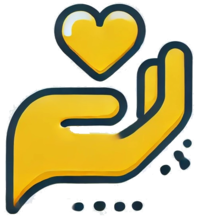

Doação de Orgãos e Tecidos
A doação de órgãos salva vidas e requer autorização/compatibilidade pelo SUS.

A doação de órgãos salva vidas e requer autorização/compatibilidade pelo SUS.

A doação de sangue é rápida, segura e pode salvar até quatro vidas.
A doação de leite materno nutre bebês prematuros e pode salvar vidas.